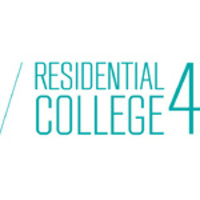

Member

NUS Residential College 4 (RC4)
Aug 2017 — Present
Being a freshman is tough. New to university and straight out of army, I could not
get accustomed to university life. RC4 changed this. My friends at RC4 inspired me to
become a better person — to work hard, to socialise more, and participate in events.
They are great companions when I feel like a disappointment, and in small achievements.
By living with others, you can see how they live their lives, and in doing so, your beliefs
about your own way of living are challenged. When I stayed with my family, I lived in
a bubble. Now I know what it is like to truly live a meaningful life.
Besides the tangible benefits, RC4 is a really fun place to be in. The late night suppers,
chatting over breakfast/dinner, going out to Clementi after a long week, going to JB. There
is never a dull moment.
I will always remember that RC4 is home to me.